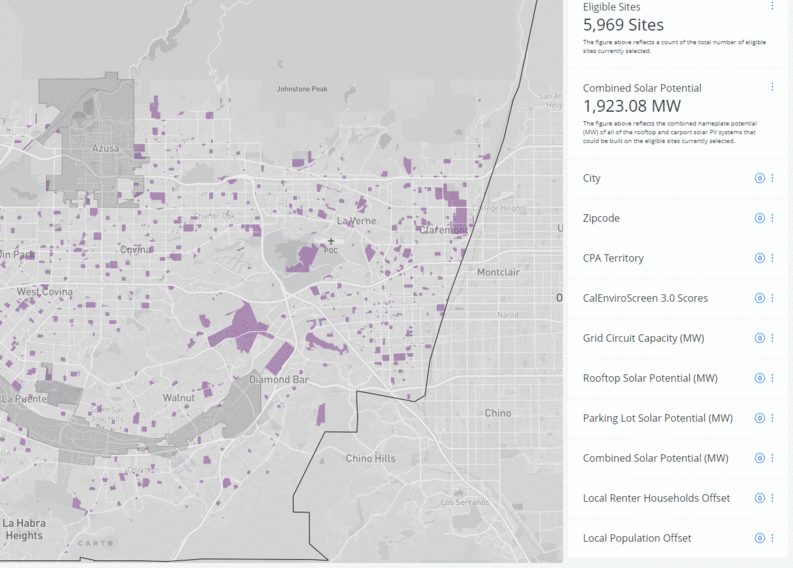

Where are opportunities to install community solar?
Find eligible sites for community solar in your city with the map tool below.
Eligible sites are publicly owned or community oriented institutional facilities with existing buildings and parking lots. Panels on the right side of the map help filter and narrow locations based on criteria important to your solar installation site. LADWP service territory is grayed out because key data inputs about grid distribution circuit capacities were unavailable.
Please note that 100% screen resolution is most ideal for using the map.
Get Started:
- There are two ways to focus the map on your city of interest. Use the search bar, located in the bottom left corner of the map. Type in your city and hit "Enter." This will zoom you into the city of interest and add a red pin.You can also manually zoom into a city with your mouse or using the "+/-" zoom tools next to the search bar.
- After zooming to your city, open the City filter. Click "Search in 87 Categories." Type your city in the search bar.
- Once it appears in the list, it will be greyed out, click the check box to the left to select. Click Apply in the upper-left corner of the filter.
Now, only eligible sites within your city are shown on the map. Other filters will reflect this change. You can now see the distribution of other available datasets for sites located only in your city. Because filters are added cumulatively, making a selection in an additional filter will further refine the selected sites.
To undo your selection, click “Unlock” in the filter.

- Scroll to and open the "CPA Territory" filter.
- Eligible sites are divided into two categories: true where the site is located within CPA territory, and false where it is outside CPA territory.
- Click "true." Now, only eligible sites within CPA territory are shown on the map. Using additional filters will further refine your selected sites.
To undo this step, click "All" within the CPA Territory filter.

- Scroll to and open the "Sufficient Circuit Capacity" filter.
- Eligible sites are divided into two categories: true where the site has sufficient grid circuit capacity to accomodate solar PV, and false where it does not.
- Click "true." Now, only eligible sites with sufficient circuit capacity are shown on the map. Using additional filters will further refine your selected sites.
To undo this step, click "All" within the Sufficient Circuit Capacity filter.

- Scroll to and open the Combined Capacity Potential (MW) filter.
- A histogram shows the distribution of combined capacity potential (MW) in each eligible site shown on the map.
- Click on the histogram and two range bars appear. Drag the bars to capture the highest range of values or the values you are most interested in.
- Now, only eligible sites with a combined capacity potential within the range you have set in the histogram are available. Using additional filters will further refine your selected sites.
To undo this step, click "Clear" within the Combined Capacity Potential filter. To see a histogram of just your selected values, click "Zoom."

- Go to the legend on the left side of the map. Click the check box next to "DAC Census Tracts." This layer is provided as an overview of the DAC Census Tracts in Los Angeles County.
- Scroll to and open the "CalEnviroscreen 3.0 Scores" filter. This histogram filters eligible sites based on the CalEnviroscreen score of the census tract it is located within.
- Click the histogram and two range bars appear. Drag the bars to capture the eligible sites with a CalEnviroscreen score between 75 and 100. The eligible sites now overlap with the DAC Census Tract layer available in the legend.
- Turn off the "DAC Census Tracts" layer. Click the rain drop above the histogram to apply the color style. Now only eligible sites located in a census tract with a CalEnviroscreen score between 75 and 100 are available and colored gradiently by score. Using additional filters will further refine your selected sites.
To undo this step, click "Clear" within the CalEnviroscreen 3.0 Scores filter. Click the raindrop to undo the color style.

- Scroll down to the "Local Population Offset" filter and open it.
- A histogram shows the distribution of a low estimate of population where total electricity usage could be offset by solar PV within the census block group where the eligible site is located.
- Click on the histogram and two range bars appear. Drag the bars to capture the highest range of population or the range you are most interested in.
- Now, only eligible sites with the highest number of people whose electricity usage could by offset by solar PV within the range you have selected are visible on the map. Using additional filters will further refine your selected sites.
To undo this step, click "Clear" within the Local Population Offset filter. To see a histogram of just the sites you've selected, click "Zoom."
- Go to the legend on the left side of the map. Click the check box next to the "Housing Attribute Data" layer. This layer is provided as an overview of the percentage of renters in each census tract.
- Scroll to and open the "Local Renter Household Offset" filter. This filters eligible sites based on a low estimate of the population where total electricity usage could be offset by solar PV within the census block group where the eligible site is located.
- Click the histogram and two range bars appear. Drag the bars to capture the eligible sites within the highest range of percent renters.
- Now, only eligible sites with the highest number of renters whose electricity usage could by offset by solar PV within the range you have selected are visible on the map. Using additional filters will further refine your selected sites.
To undo this step, click "Clear" within the Local Renter Household Offset filter. To see a histogram of just the sites you've selected, click "Zoom."

The Eligible Sites data layer is available for download through CARTO as a csv, shapefile, KML, GeoJSON, SVG, and GeoPackage. Metadata of includes column names and descriptions.
Our suggestion is, if you would like the data for a few sites you have identified, to write down the Site ID value. Site ID is the first piece of information when you click on a site. Then, filter in the downloaded data based on the Site ID values you have identified.
Download Eligible Sites Data Download Eligible Sites Metadata